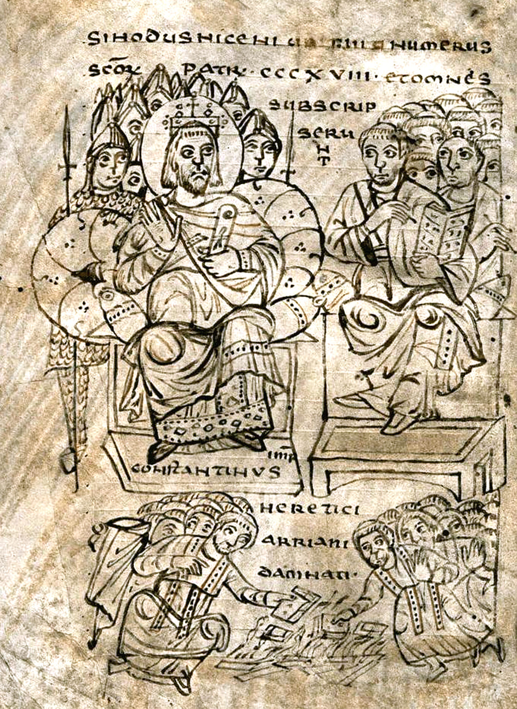
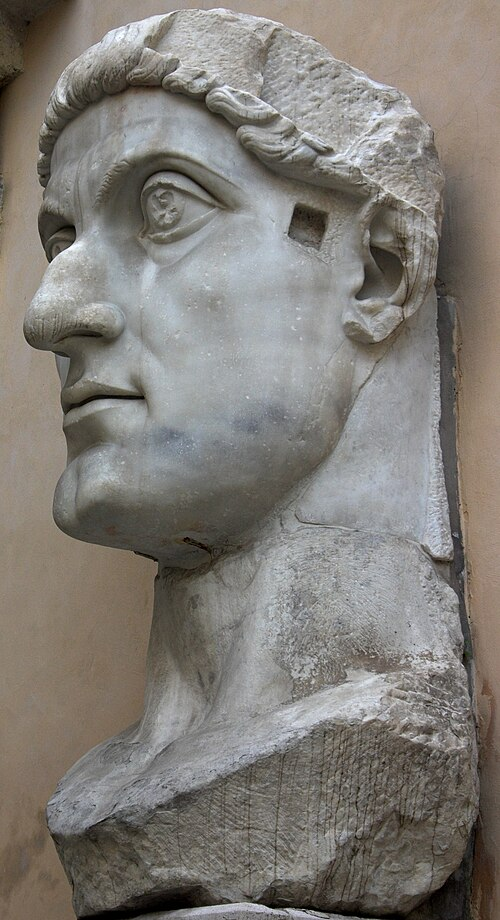
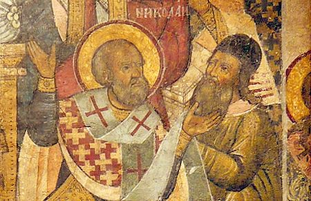
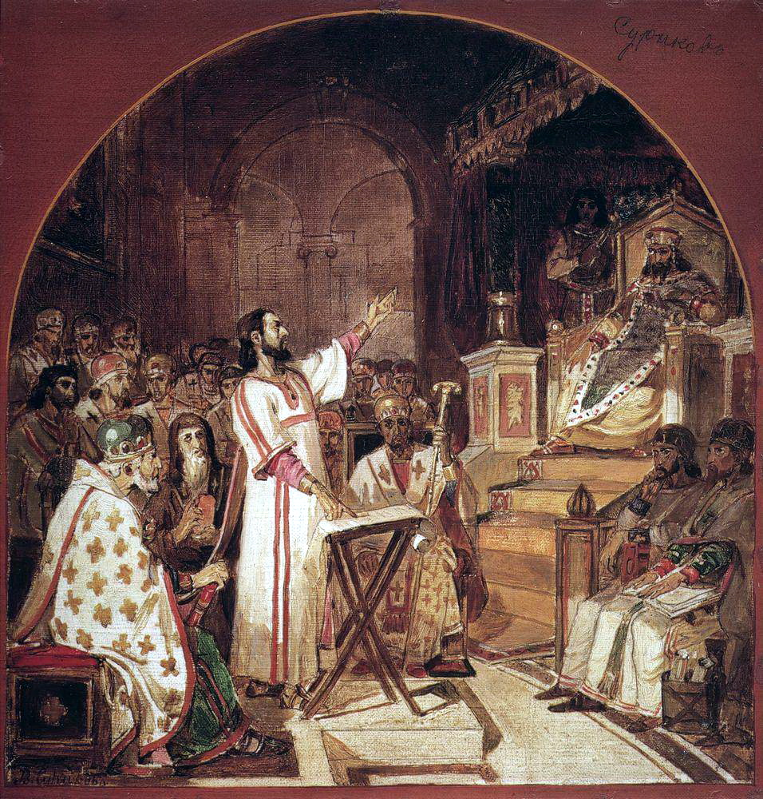

La palabra bandera del concilio no era bíblica, tenía antecedentes maniqueos y un sínodo anterior la había objetado. Y el mejor testigo de eso es el propio Arrio.
El concilio de Nicea es, probablemente, el acontecimiento de la historia del cristianismo sobre el que circulan más cosas falsas por metro cuadrado. Y lo interesante no es desmentirlas —eso es fácil— sino rastrear de dónde salen, porque casi todas tienen un origen localizable, con fecha y con autor.
Pero antes de las leyendas conviene contar lo que sí pasó, que es menos espectacular y más raro.
Lo convoca Constantino, y lo convoca dos veces: la primera carta fijaba la sede en Ancira de Galacia, y una segunda —conservada solo en siríaco— la traslada a Nicea de Bitinia, alegando la conveniencia de los obispos de Italia y de Europa y, con una franqueza encantadora, «la excelente temperatura del aire». Nicea estaba además a un paso de Nicomedia, donde residía el emperador.
Los obispos llegan a principios de mayo de 325. El concilio abre el 20 de mayo. Hay antes un debate preliminar entre un filósofo y la posición arriana. El emperador llega el 19 de junio, recibe memoriales con acusaciones de unos obispos contra otros, los quema sin leerlos y exhorta a la reconciliación. Y ese mismo 19 de junio se adopta el credo, con la palabra homoousios y con cuatro anatemas al final.
Después se condena a Arrio y a sus escritos, se le destierra, y se depone a los obispos que no firman. Se trata la fecha de Pascua —se condena la práctica de sirios, cilicios y mesopotámicos de seguir el cómputo judío, y se adopta la independencia del calendario judío, sin fijar los detalles del cómputo—, y se resuelve el cisma meleciano. Y se aprueban veinte cánones de disciplina sobre eunucos, ordenaciones, cohabitación clerical, concilios provinciales, derechos metropolitanos, usura y el honor de la sede de Jerusalén.
¿Cuándo terminó? Aquí hay una discrepancia real entre las fuentes, y prefiero decirla a elegir una en silencio: hay quien da el 25 de agosto y quien sitúa la clausura a finales de julio, antes de la celebración del día 25. Lo seguro es la apertura, el credo y que todo ello sucede en torno a los veinte años de reinado de Constantino.

La cifra más citada del concilio es 318. Y no cuadra con ninguna otra cosa que sepamos.
Los testigos antiguos dan números distintos. Eusebio de Cesarea, que estuvo allí, escribe que el número de obispos «excedía los doscientos cincuenta». Eustacio de Antioquía, que también estuvo, da unos doscientos setenta. Historiadores posteriores —Gelasio, Sócrates— hablan de más de trescientos, y a continuación citan la cifra menor de Eusebio, lo que ya dice bastante.
Las listas de firmantes que se conservan traen entre doscientos y doscientos treinta nombres, según quién cuente, y varían entre las versiones latina, siríaca, copta, griega, árabe y armenia. Ninguna llega a 318.
¿De dónde sale entonces la cifra? De Génesis 14,14, donde Abrahán arma a sus 318 siervos para rescatar a Lot y vence a los reyes. El primer testigo que liga el número al pasaje es Hilario de Poitiers en 359, y Atanasio la usa en un texto de hacia 369 — es decir, unos cuarenta años después del concilio, y contra los testimonios oculares. Más tarde se añadirá una lectura alegórica de la grafía griega: 318 se escribe ΤΙΗ, y las dos últimas letras abrevian «Jesús» mientras la primera tiene forma de cruz.
Es una cifra teológica, no un recuento. Damos la horquilla con su procedencia, como hicimos con las sesenta y cinco o sesenta y seis apariciones del Sheol, porque la discrepancia es en sí misma un dato: sobre cómo se recuerda un concilio, y sobre con qué facilidad una cifra redonda desplaza a los que estaban delante.

Desmontar una leyenda sin decir de dónde sale es perezoso, y además no convence a nadie. Cada entrada de este registro trae dos fechas: la del concilio y la de la primera huella localizable de la historia. La distancia entre las dos es, en varios casos, de más de mil años. Pulsa cualquier fila.
Y ahora el centro de la entrega, que es lo que casi nunca se cuenta.
Homoousios —«de la misma sustancia»— es la palabra bandera de Nicea. En 325 era un término problemático, y por tres razones acumuladas.
No es bíblica. No aparece en el Nuevo Testamento, y eso en el siglo IV pesaba mucho más que hoy. Lo reconocen los propios nicenos: Atanasio recuerda que Dionisio de Alejandría, acusado ante Roma, se defendió alegando que no hallaba el término en la Escritura aunque su doctrina fuera conforme. Y Eusebio, en la carta con que explicó a su iglesia por qué había firmado, dice que había objetado las expresiones no escriturísticas antes de aceptarlas.
Tenía antecedentes incómodos. El término circulaba en contextos gnósticos —Hipólito, Ireneo y Clemente lo documentan— y se asociaba además a los maniqueos. Y aquí hay un testimonio que vale más que cualquier otro, porque viene del lado contrario: en su carta a Alejandro, Arrio rechaza que el Hijo sea una «porción consustancial del Padre» y atribuye esa idea a los maniqueos. Es decir: el mejor testigo de que la palabra tenía resonancia herética y materialista antes del concilio es el propio condenado, cinco años antes.
Y había un precedente conciliar en contra. Tres autores del siglo IV —Atanasio, Basilio e Hilario— dicen que el sínodo de Antioquía que depuso a Pablo de Samosata, hacia 268, se había pronunciado contra el término.
Aquí hay que ser exacto, porque la cosa se cita más redonda de lo que es. Atanasio sí dice que aquellos obispos «dijeron que el Hijo no es consustancial con el Padre», y explica por qué: Pablo argüía que, si Cristo fuera consustancial, habría tres esencias, una previa y dos derivadas; el concilio rechazó la palabra para desarmar ese sofisma, tomándola en sentido corporal. Basilio es más cauto de lo que suele citarse: no dice que la anularan, dice que «encontraron falta en el término, como desafortunado» — y a continuación defiende el vocablo con energía. Hilario argumenta que el Samosateno usó mal la palabra, y pregunta por qué eso habría de impedirle a él entenderla bien.
Y falta el dato incómodo, que es un silencio. Eusebio conserva el relato más antiguo y extenso del caso de Pablo de Samosata, con la carta sinodal incluida — y no menciona el término. Un argumento de silencio no prueba nada por sí solo, y Eusebio no reproduce las actas completas sino extractos escogidos. Pero conviene notar que los tres testigos que afirman el rechazo escriben todos en el siglo IV, todos en plena polémica y todos con interés en el asunto — y que los tres lo mencionan, muy significativamente, a su pesar: para neutralizar un argumento que circulaba contra ellos. Lo que refuerza que el argumento existía.
Estuvo allí. Escribe que el número de obispos «excedía los doscientos cincuenta».
También estuvo. Da unos doscientos setenta.
Entre doscientos y doscientos treinta nombres, con variaciones entre las versiones latina, siríaca, copta, griega, árabe y armenia. Ninguna llega a 318.
318, treinta y cuatro y cuarenta y cuatro años después del concilio. Y el número sale de Génesis 14,14: los siervos con que Abrahán venció a los reyes.
318 se escribe ΤΙΗ en griego: las dos últimas letras abrevian «Jesús» y la primera tiene forma de cruz. La cifra ya no necesita a nadie que la cuente.
Si homoousios hubiera sido el triunfo que la divulgación describe, se esperaría encontrarla por todas partes después de 325. Ocurre lo contrario, y el dato es desconcertante.
Antes de los años cincuenta, Atanasio emplea la palabra una sola vez en todo lo que escribe. Una. En las Orationes contra Arianos nunca presenta abiertamente las fórmulas de Nicea como marca consensuada de ortodoxia, aunque su lenguaje muestre compromiso con la teología nicena. La primera defensa extensa del término es el De decretis, que se fecha hacia 353 — casi treinta años después del concilio y ya dentro de un segundo conflicto.
Conviene matizar la fórmula, porque «desapareció» es demasiado fuerte. El término no estaba olvidado: estaba disputado y evitado. Los años cuarenta y cincuenta son de tensión credal creciente, y los anatemas de Sirmio de 351 atacan precisamente el lenguaje de la sustancia. Lo exacto es esto: entre 325 y los años cincuenta, homoousios no funcionó como criterio de ortodoxia ni siquiera para sus defensores. Su conversión en bandera es obra de Atanasio a partir del De decretis, y solo se consolida con la teología pro-nicena de los años sesenta y setenta del siglo IV.

Y eso deja la historia estándar —«Nicea decidió y el asunto quedó zanjado»— insostenible desde dentro del propio bando vencedor. La palabra que se presenta como el triunfo de 325 fue, durante un cuarto de siglo, una palabra que casi nadie quería usar, incluidos los que la habían firmado.
Lo que viene después de 325 no es la paz. Son cincuenta y seis años, y la entrega siguiente es sobre ellos.

Contra quien use Nicea para decir que la divinidad de Jesús se decidió a mano alzada en el siglo IV, aquí están los expedientes de las siete leyendas, con su fecha de nacimiento.
Y contra quien lea esto como una defensa del concilio: el núcleo verdadero está todo aquí dentro y no necesita leyendas. Un emperador sugirió la palabra clave y la glosó; los libros del perdedor se mandaron quemar; los dos obispos que no firmaron fueron desterrados; y la cifra de padres que la tradición repite viene de un versículo del Génesis, no de una lista. Nada de eso hace falta inventarlo.
Es consenso la secuencia de 325 —convocatoria por Constantino, apertura el 20 de mayo, credo el 19 de junio, condena de Arrio, fecha de Pascua, cisma meleciano y cánones disciplinares—; que las cifras antiguas de asistentes discrepan entre sí y que ninguna lista de firmantes llega a 318; que homoousios no es un término bíblico; y que su uso fue escaso entre 325 y los años cincuenta.
Está en debate abierto la fecha de clausura del concilio —las fuentes discrepan entre finales de julio y el 25 de agosto, y la cronología antigua está confusa—; el número exacto de cánones; la prehistoria del término homoousios, sobre la que no hay acuerdo; y qué significó exactamente la objeción de Antioquía hacia 268, que una lectura reciente explica por un marco conceptual en el que ousía e hypóstasis se usaban indistintamente para una entidad individual, y en el que la palabra sencillamente no cabía.
Dos cifras que no damos. La primera: el «más de trescientos» que se atribuye a Constantino no procede de Constantino; procede de historiadores posteriores, y no he localizado ninguna carta suya con un número de asistentes. La segunda: el resultado «218 contra 2» no tiene fuente, ni antigua ni moderna. Lo señalo en la pieza y lo repito aquí porque circula con aire de dato preciso.
Y una cautela sobre Eusebio, que es la fuente principal del punto más delicado. Su carta a la iglesia de Cesarea —donde cuenta que el emperador aconsejó suscribir el credo «con la inserción de la sola palabra»— es una justificación personal: está explicando por qué firmó algo que al principio objetó. El testimonio es tendencioso, y lo es en las dos direcciones a la vez: sirve para exagerar el papel de Constantino y sirve para minimizarlo, según qué frase se recorte.
Para el concilio. Eusebio, Vida de Constantino III,6-14 y la carta a la iglesia de Cesarea (Opitz, Urkunde 22; también en Atanasio, De decretis 33, Sócrates, HE 1,8 y Teodoreto, HE 1,12) · Sócrates, HE 1,8-13 · Teodoreto, HE 1,7-12 · Credo y anatemas de 325, Opitz, Urk. 24 · Glen L. Thompson, The Council of Nicaea According to the Ancient Sources, 2024.
Para las listas y la cifra. H. Gelzer, H. Hilgenfeld y O. Cuntz, Patrum Nicaenorum nomina latine, graece, coptice, syriace, arabice, armeniace, Teubner, Leipzig, 1898 · Ernest Honigmann, «La liste originale des Pères de Nicée», Byzantion 14 (1939) · David M. Gwynn y Young Richard Kim (ed.), The Cambridge Companion to the Council of Nicaea, Cambridge University Press, 2021 · Hilario, De synodis 86 · Atanasio, Ad Afros 2 · Ambrosio, De fide I, prólogo.
Para las leyendas. Synodicon Vetus 35, ed. John Duffy y John Parker, Dumbarton Oaks, 1979 · Voltaire, Dictionnaire philosophique, artículo «Conciles», edición de 1767 · Petrus de Natalibus, Catalogus sanctorum, Lyon, 1508, fol. VII · Damasceno el Monje, Thesaurós, Venecia, 1570 · Gustav Anrich, Hagios Nikolaos, I, p. 459 · Sócrates, HE 1,9 y Sozomeno, HE 1,21, para la orden de quemar los escritos de Arrio.
Para el homoousios. Atanasio, De synodis 43-45 · Basilio, Carta 52 · Hilario, De synodis 81 y 86 · Arrio, Urk. 6,3, para la atribución a los maniqueos · Pier Franco Beatrice, «The Word "Homoousios" from Hellenism to Christianity», Church History 71/2 (2002) 243-272 · Dragoș Andrei Giulea, «Antioch 268 and Its Legacy in the Fourth-Century Theological Debates», Harvard Theological Review 111/2 (2018) 192-215 · Lewis Ayres, «Athanasius' Initial Defense of the Term homoousios: Rereading the De Decretis», Journal of Early Christian Studies 12/3 (2004) 337-359.